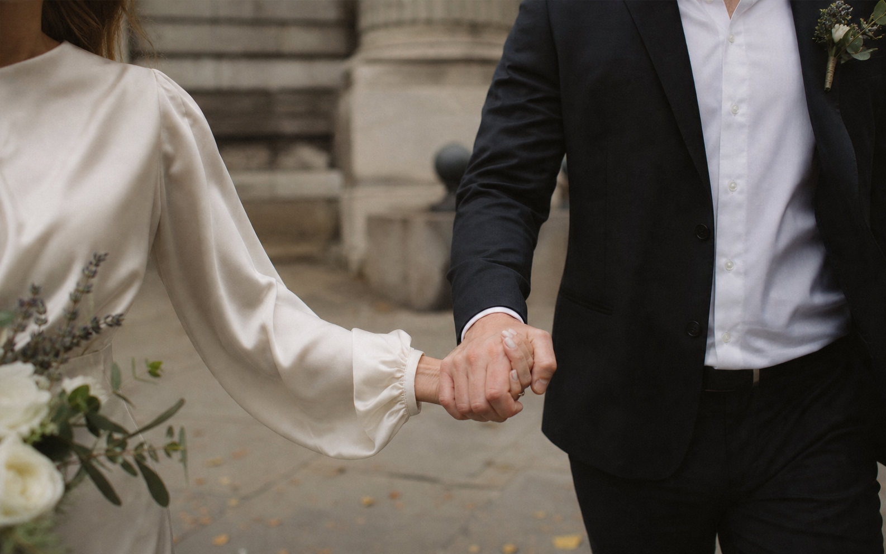
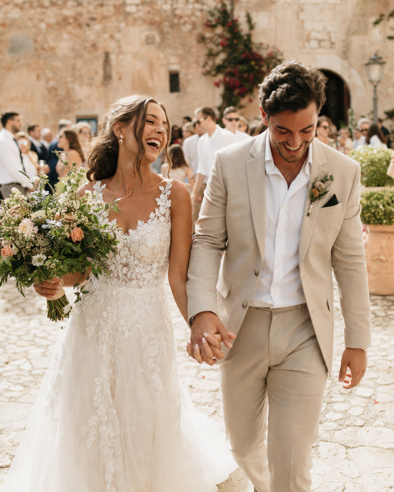

Rosa & Imran at home, before city hall.
View this story →
For the real, fleeting bits
Photos that take you back.
Quiet glances, loud laughter, your people all in one place. June photographs weddings as they happen, with room for you to be there too.
A little less posing
Stay in the moment. I will keep the record.
I am there for the rush before the ceremony, the hug that catches you off guard, and the dance floor when nobody is looking. You will get gentle direction when you need it, then plenty of space to enjoy your own day.

Featured story
Sofia & Leo, under the lemon trees.
They wanted a long lunch, every cousin on the dance floor, and a few minutes alone before sunset. The rest took care of itself.
See what a full story includes →Recent work
Small moments, held onto.
Weddings, city hall mornings, and family weekends across Europe and wherever the good people gather.
Marina & Theo, all afternoon at the table.
View this story →Elise & Noor, a dance floor that never settled down.
View this story →About June
A calm person with a camera.
I work fast when the light is moving and quietly when the room needs it. My favourite photos are the ones that let you feel the day, not just see it.
“June made the camera feel like part of the room. We recognised ourselves in every photo.”
Maya & Tom · AmsterdamStart here
Tell me what you are planning.
Share your date, place, and the part of the day you care about most. June replies within two working days.
Based in Amsterdam
Available across Europe and beyond.
hello@junebell.example
+31 20 555 0194